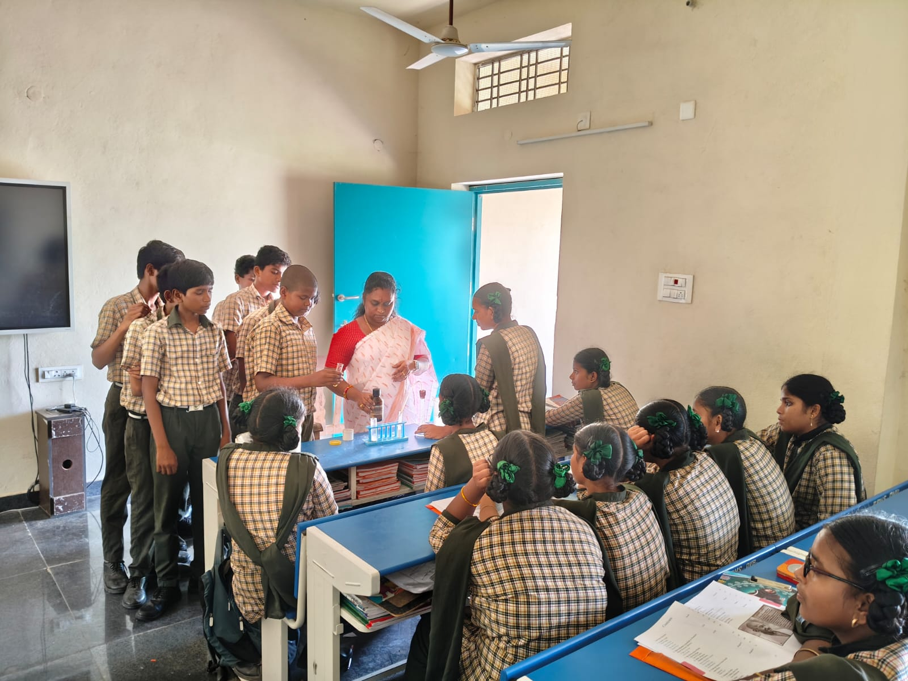
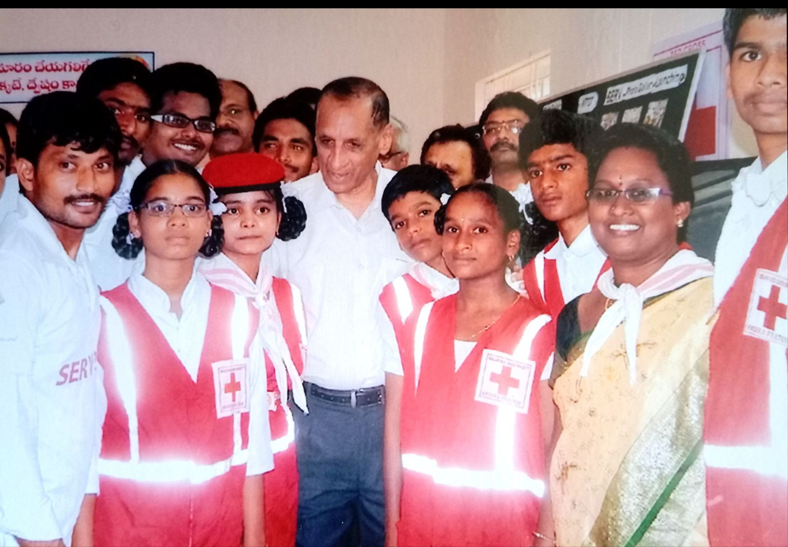
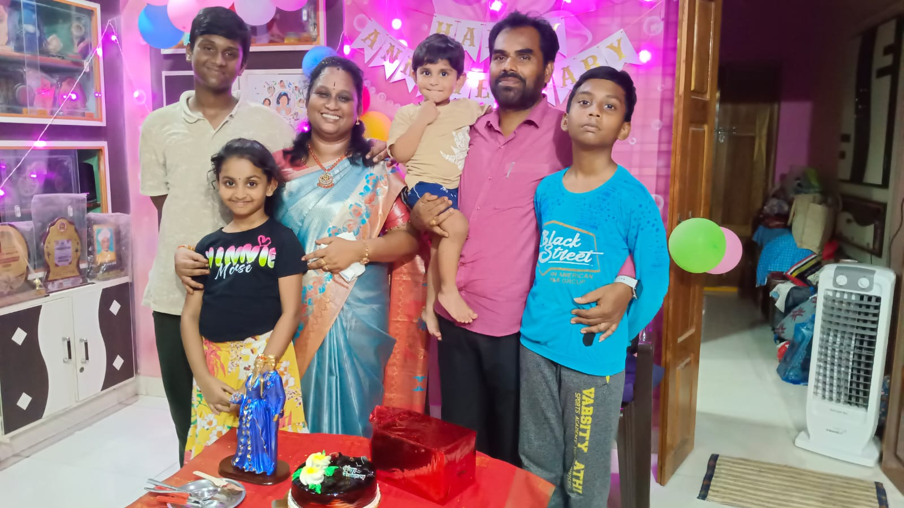

PURNIMA DUSI

For over 20 years, Purnima Dusi served as a dedicated Government Teacher, but her true curriculum was humanity. A passionate educator and active Red Cross member, she always looked past the margins of textbooks to teach the invaluable lessons of empathy, integrity, and social responsibility.
"Inspiring minds, nurturing spirits, and shaping the citizens of tomorrow."
Educator & Mentor
She was not a teacher who just taught a lesson and left. She looked after every student like her own child and was always the first to help any student in need. She treated every child equally and fairly so that no one felt left behind.
For her, school was not just about textbooks. Alongside the school staff, she worked hard to make the school the best place for children to grow in every way, happily encouraging them to take part in sports, singing, and dancing, while also teaching them good manners for life.
She was a great strength for the whole team. Whenever an in-charge was missing or there was a problem, she bravely stepped forward with the staff to take responsibility and make things better. She had a natural gift for talking to young people and knew exactly how to make them listen with respect.

Humanitarian Service
Beyond being a wonderful teacher, she was also a very active member of the Red Cross Society. She had a deep desire to serve the community and was always ready to help anyone in need. Whenever there was a major charity event or an emergency, she was always at the front lines, giving her time and energy.
What made her service truly special was her deep care for the poor and helpless. She knew that there were many families who desperately needed support but were too quiet, uneducated, or confused to know who to ask or where to go for help.
She actively went out into the community to find these families, becoming a bridge between them and the support they deserved. She gave a voice to those who could not speak for themselves and comforted those who felt completely forgotten.

A Great Family Woman
At home, she is the heart of the family and a beautiful example of love and respect. She always honors the elders with deep respect and takes care of the younger ones with absolute warmth and affection. For her, a strong family is built on togetherness and unity. Whenever important life decisions need to be made, she always speaks with her husband and the elders of the house, ensuring everyone’s voice is heard and respected.
Even though she is a great and successful woman in the outside world, she has always stayed completely grounded. She treats every single person with respect and chooses to live a very simple, joyful, and contented life.

Love for Music
Beyond her professional accomplishments and humanitarian deeds, Music and singing have always held a very special place in her heart. From a young age, she possessed a deep curiosity and a strong desire to learn the beautiful art of traditional music. As the years passed, she truly proved to the world that age is just a number. She showed everyone that when a person has real passion and a curious mind, they can achieve absolutely anything they set their heart on.
Through continuous practice and endless dedication, she and her team made their biggest dream come true when they were invited to perform together on All India Radio. Sharing their voices with the nation was a proud moment that they built as a team.

A great Legacy
As the daughter of a very well-known and highly respected teacher, she made her father incredibly proud in so many ways throughout his life. Today, she beautifully continues his noble legacy by walking in his footsteps and keeping his spirit alive. By being an outstanding teacher, a dedicated Red Cross activist, and a passionate artist,
Her life is a shining example of true service, showing that her father's values lives on through her. By always being there for her students as a kind guide and mentor,